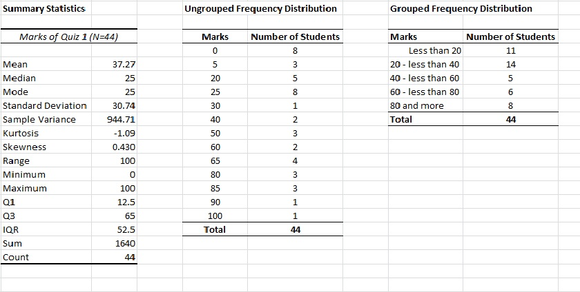

Here is the summary statistics of the marks of the Quiz. It looks as if marks are gathered in low values. So it is apparent that you should be working harder for the mid-term exam.

If you want to learn your own mark from this Quiz, click here.